Opis interfejsu
Panel główny
Po zalogowaniu, w panelu głównym wyświetlają się ankiety oraz raporty, które są utworzone przez użytkownika lub, do których użytkownik ma uprawnienia.
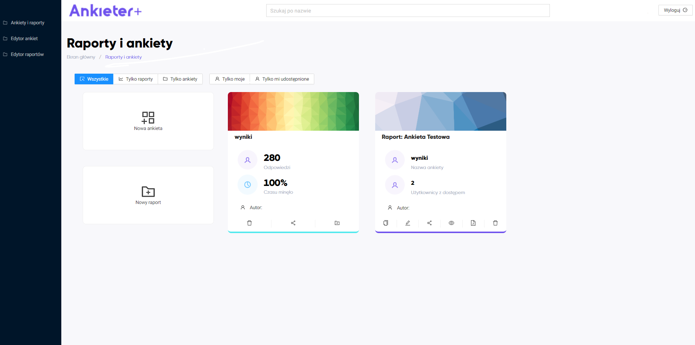
Można zawęzić widok do ankiet lub raportów.
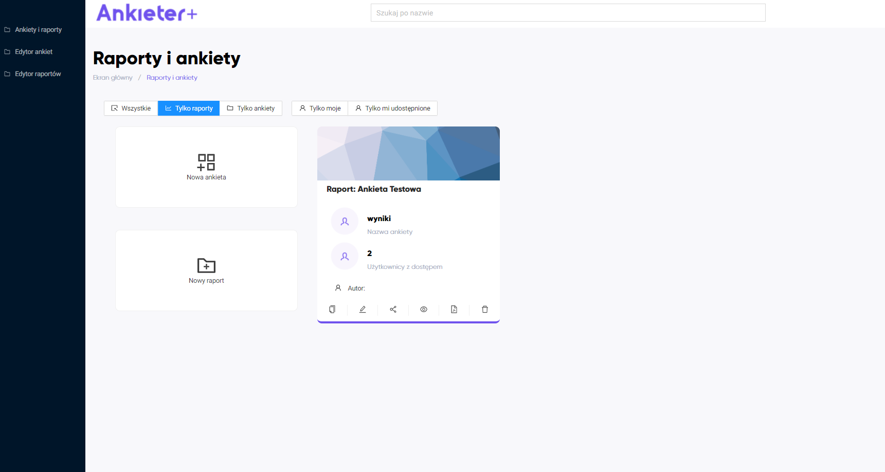
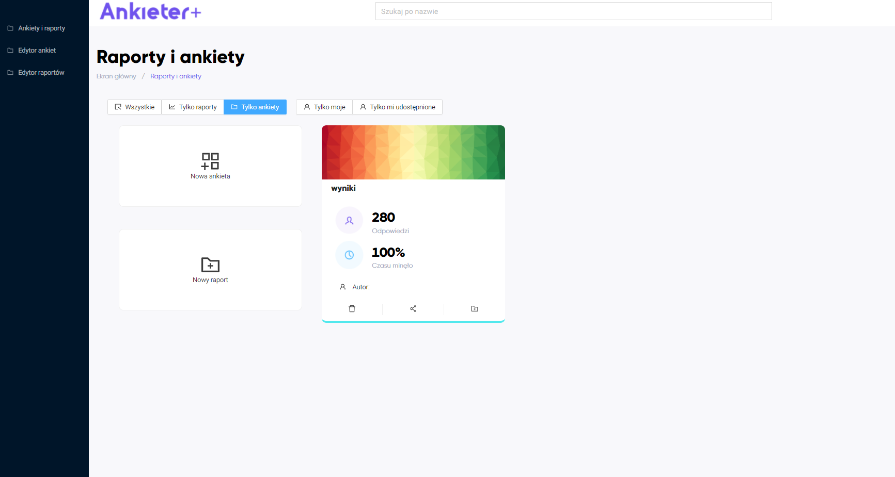
Można wyświetlić te ankiety/raporty, które są utworzone przez użytkownika.
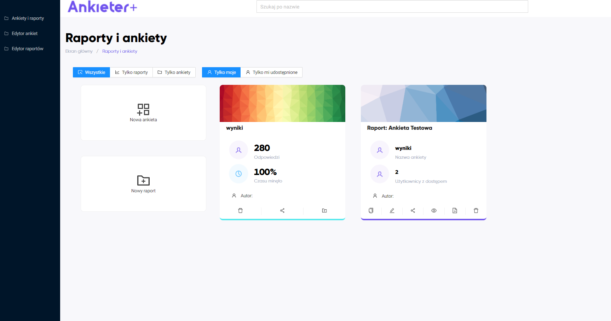
Albo takie, które są użytkownikowi udostępnione.
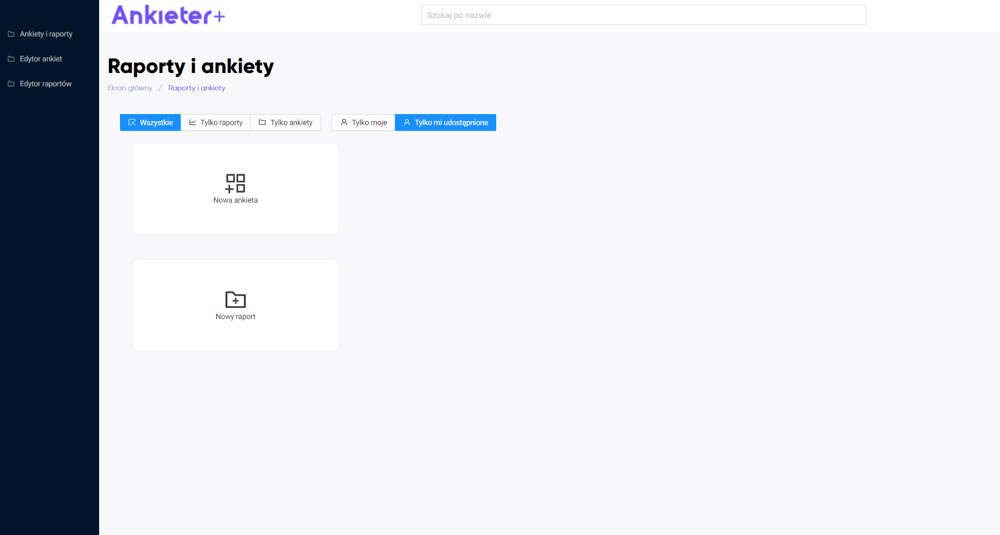
Edytor ankiet
Edytor ankiet służy do wygenerowaniu ankiety w formacie xml.
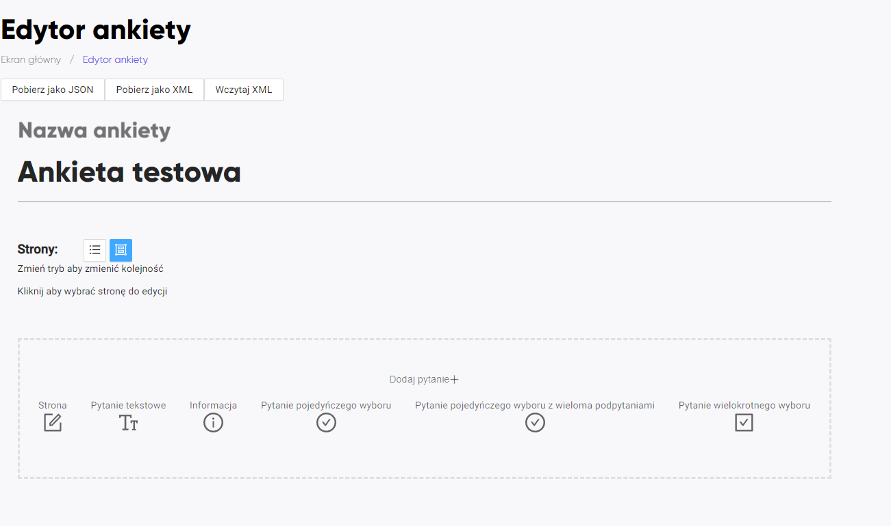
Strona
Umożliwia wyświetlenie pytań na jednej stronie.
Informacja
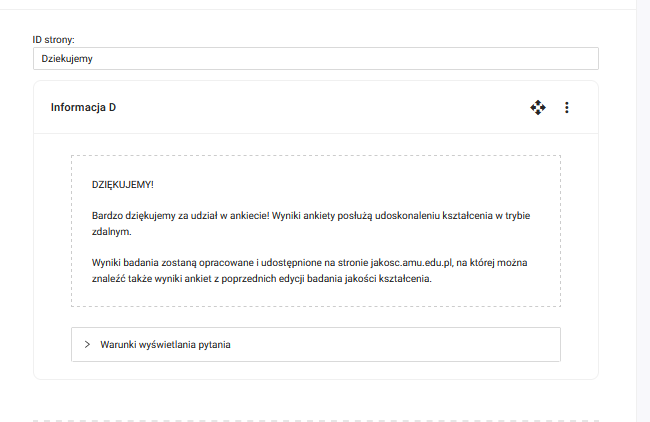
Typy pytań dostępne w edytorze
Pytanie pojedyńczego wyboru
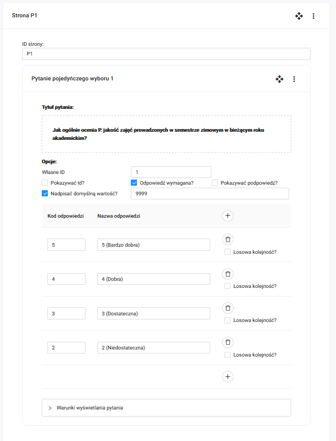
Pytanie tekstowe
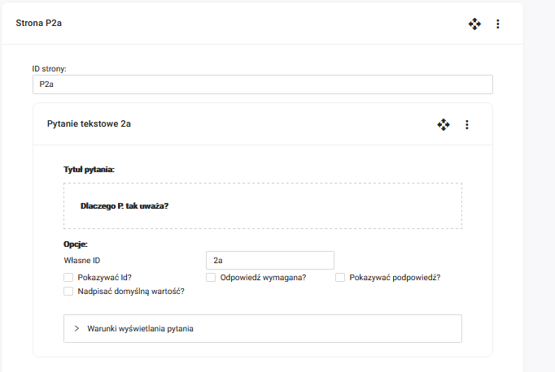
Pytanie pojedynczego wyboru z wieloma podpytaniami
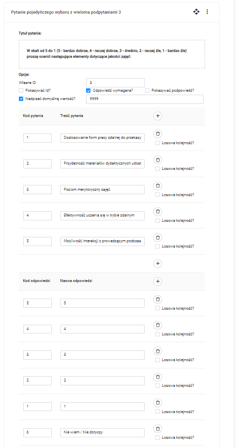
Pytanie wielokrotnego wyboru
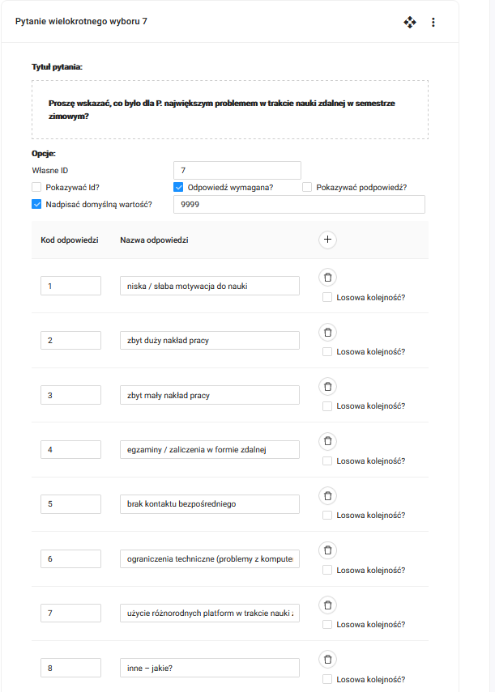
Dodatkowo można określić warunki wyświetlenia pytania.
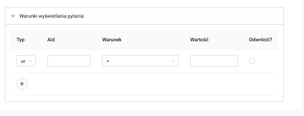
Dodawanie wyników z ankiety
W panelu głównym należy kliknąć Nowa ankieta.
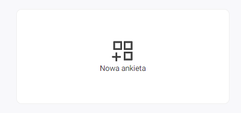
Wyświetli się okno:
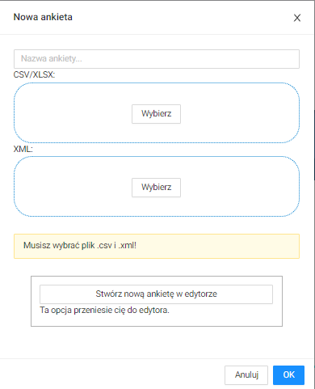
W oknie należy podać nazwę nowej ankiety, umieścić plik .csv z wynikami ankiety oraz plik .xml ze strukturą ankiety.
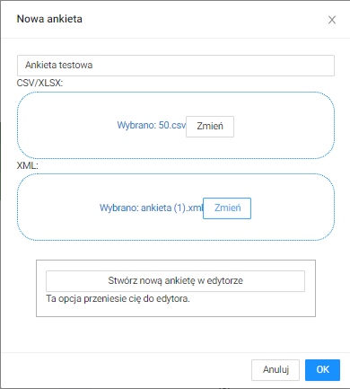
Należy kliknąć przycisk OK. Wyniki ankiety zostaną dodane i wyświetlą się w panelu głównym.
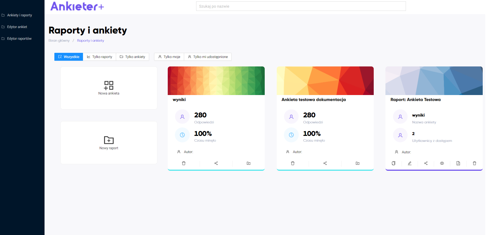
Edytor raportów
Raport umożliwia dodanie pól tekstowych oraz wykresów. Pola można przestawiać.
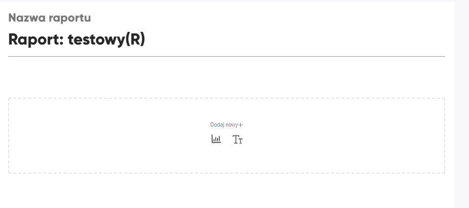
Dodanie elementu tekstowego
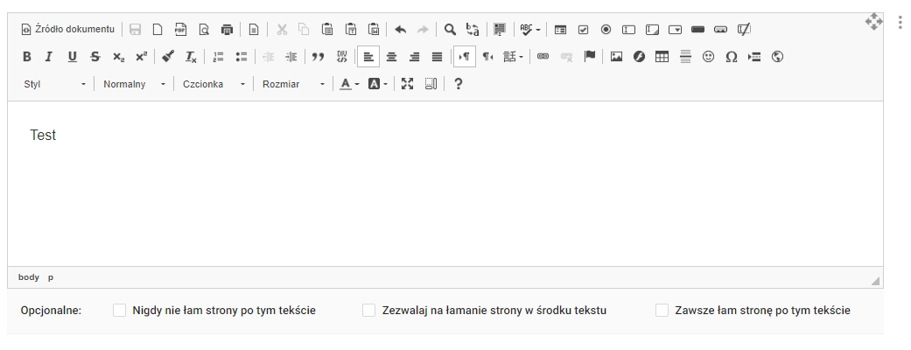
Dodanie wykresu
Można wybrać typ wykresu
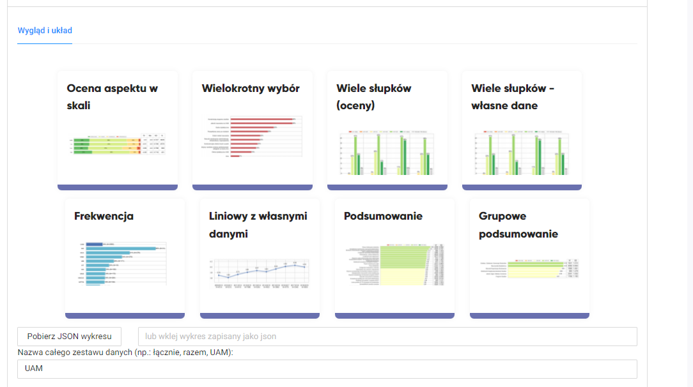
Dalej wskazuje się pytanie będące źródłem danych oraz pytanie, po którym będą filtrowane odpowiedzi.
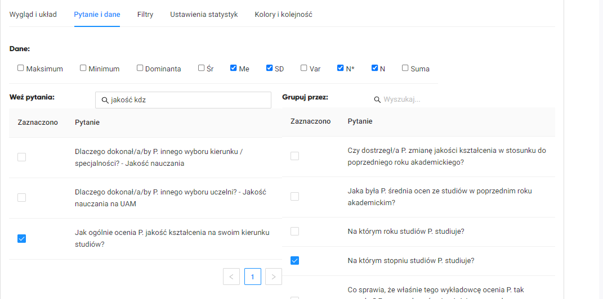
Wygenerowany wykres
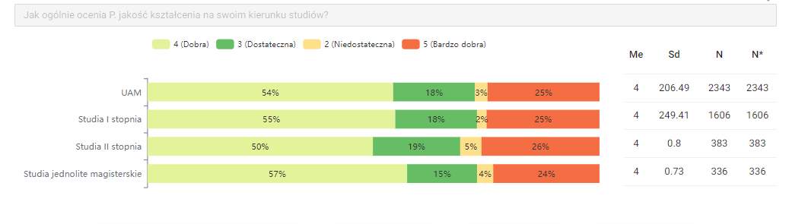
Dodatkowo istnieje możliwość nadpisania etykiety dla całego raportu oraz filtrowanie ankiety przez odpowiedź.
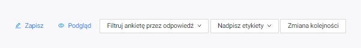